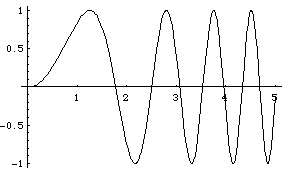
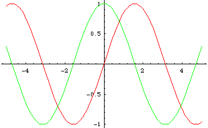

| A note on Mathematica's memory. Mathematica remembers values assigned to symbols, even if the notebook in which the symbol was defined has been closed, so long as Mathematica has not been shut down. Someone may have been using Mathematica on this machine before you. If you begin to get badly wrong answers or strange error messages, try quitting Mathematica and restarting it. |
| In addition to the obvious arithmetic operations, Mathematica can do graphics and symbolic computations. |
| To plot the graph of sin(x2), for x bewteen 0 and 5, use this command |
| Plot[Sin[x^2],{x,0,5}] |
| and obtain this picture. |
|  |
| Note the first letter of Sin is capitalized, and the argument is enclosed in square brackets: Sin[x]. Is it clear how to plot a domain other than 0 ≤ x ≤ 5? |
| We can plot more than one function on the same graph, and use different colors, with commands of this form. |
| Plot[{Sin[x],Cos[x]},{x,-5,5},PlotStyle->{RGBColor[1,0,0],RGBColor[0,1,0]}] |
| PlotStyle lets you assign different attributes to the functions plotted. In this example, we assign the Sin[x] graph the color red (RGBColor[1,0,0]: 1 unit of red, 0 of green, 0 of blue) and the Cos[x] graph the color green. Here is the resulting graph. |
|  |
| We might be interested in plotting sin(xk), for x bewteen 0 and 5, and for k ranging over different values between, say, 1 and 2. We could plot these individually, or use the Do command to make a movie. |
| Do[Plot[Sin[x^k],{x,0,5}],{k,1,2,.1}] |
| The command {k,1,2,.1} means let k range from 1 to 2 in steps of 0.1. That is, plot Sin[x], Sin[x^1.1], Sin[x^1.2], ..., Sin[x^2]. Here is an animation of the resulting pictures. |
| In addition to graphics, Mathematica can perform symbolic computations, including differentiation and integration. For example, to differentiate sin(x2), first define a function |
| f[x_]:=Sin[x^2] |
| Note some features of defining functions. The definition statement is indicated by :=, the variable in the function is indicated by an underscore x_, and the variable is enclosed by square brackets f[x_]. |
| After evaluating the cell defining f[x], the derivative can be found be evaluating |
| f'[x] |
| This gives |
| 2 x Cos[x2] |
| We can obtain the same result from the single command |
| D[Sin[x^2],x] |
| Finally, we can integrate functions symbolically. For example, to integrate x*Sqrt[x^2 + 2] use the command |
| Integrate[x*Sqrt[x^2 + 2],x] |
| This yields |
| (2/3 + x2/3) Sin[x2 + 2] |
| The last x in the command Integrate[x*Sqrt[x^2 + 2], x] indicates the variable of integration. |
| Definite integrals are done similarly. To integrate
x*Sqrt[x^2 + 2] between |
| Integrate[x*Sqrt[x^2 + 2],{x,0,1}] |
| This yields |
| -2 Sqrt[2]/3 + Sqrt[3] |
| Here are a few exercises to test the Plot command. |
Return to Mathematica code.
{kind=link}